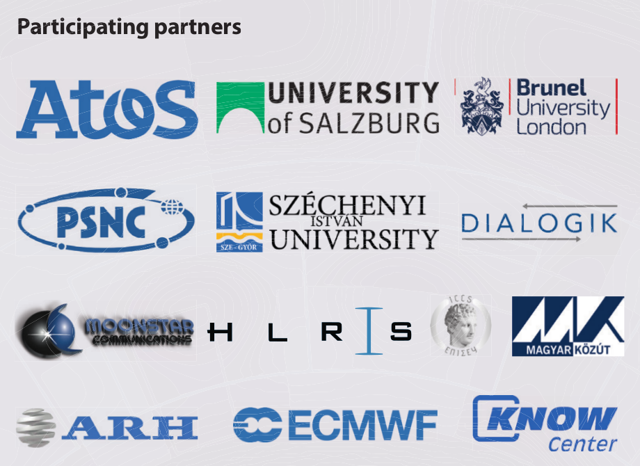
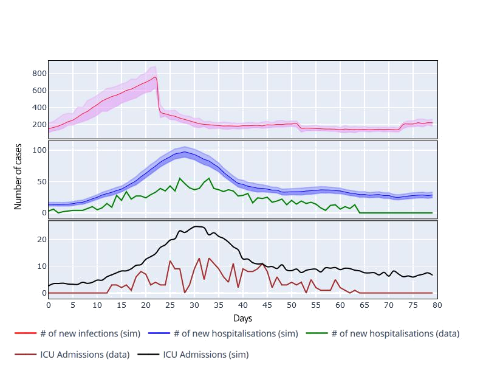
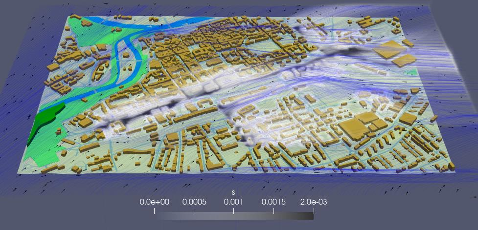
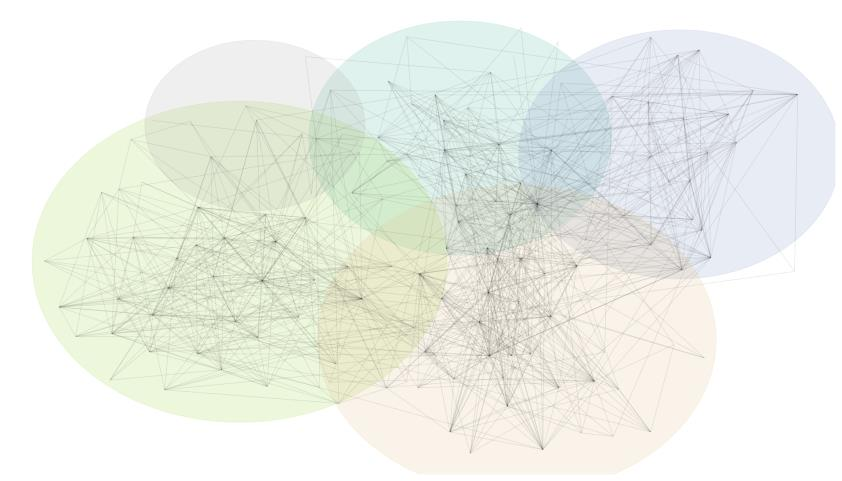
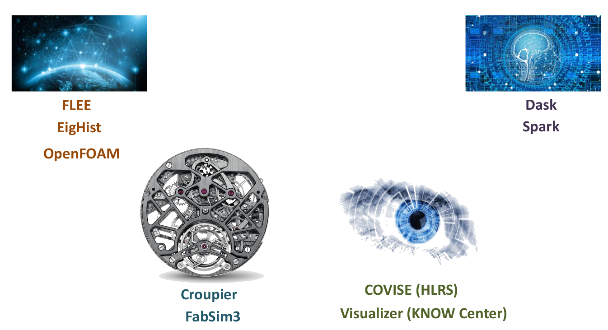
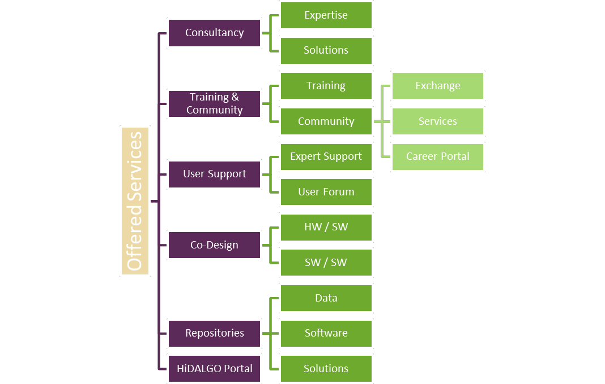

HPC and Big Data Technologies for Global Challenges
 EU founded project
EU founded project@OITTTIO



Goal: evidence based policy-making for current and upcoming situations via accurate GC simulations
High Level Ambition & Project Targets
For the first time in history, more people die today from eating too much than from eating too little; more people die from old age than from infectious diseases; and more people commit suicide than are killed by soldiers, terrorists and criminals combined.
— Yuval Harari "Homo Deus: A Brief History of Tomorrow"
Top news of the last months (dominate in media):



HPDA in UAP use case:

Accurate digital twinning of GCs ⥂ coupled simulations + HPDA


Software-Software Co-Design
Hardware-Software Co-Design
https://hidalgo-project.eu/consulting


https://hidalgo-project.eu/stakeholder-survey
January 20
| 15:30 – 16:00 | Derek Groen, BUL, UK | Simulating the Spread of Covid-19 in Urban Areas |
| 16:10 – 16:40 | Florian Ziemen, DKRZ, DE | Preparing European Weather and Climate Models for Exascale |
| 16:40 – 17:10 | Fabian Dembski, CCGSS-BW, DE | Resilient Cities: Following the Path Towards Sustainable Development Goals |
| 17:20 – 17:50 | Christoph Schweimer, KNOW, AT | Route Pruning Algorithm for Location Graph Construction |
| 17:50 – 18:30 | Lara López, ATOS, ES | Round table: How can we solve Global Challenges through HPC/HPDA/AI? |